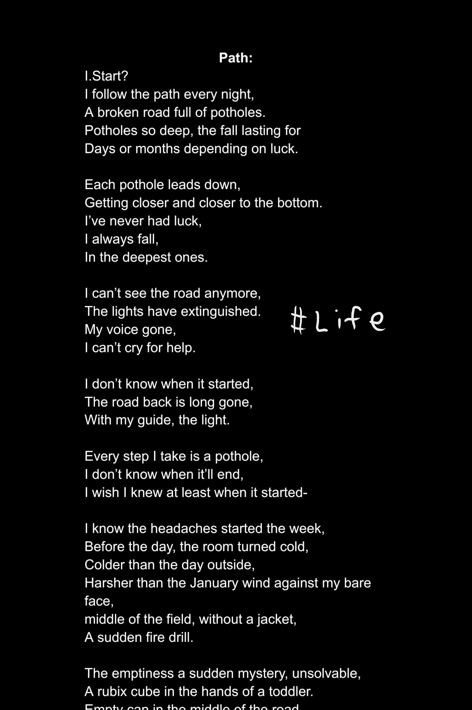

Scholastic Art and Writing Awards Silver Key (Poetry)

The profound impact of COVID-19, combined with personal challenges, has significantly affected my life. It has led to a considerable loss of sleep and a persistent state of worry.
I remember throughout the year, I felt very unproductive and it almost seemed as if life lost it's spark.
I wrote this collection poems in December as a way for me to let go of all the negative emotions and write, something I really linked to do before everything seemingly came to a halt in my life.
The guide refers an old friend that I lost contact with that year, that I never got to thank and will always be grateful for.
Path:
I.Start?
I follow the path every night,
A broken road full of potholes.
Potholes so deep, the fall lasting for
Days or months depending on luck.
Each pothole leads down,
Getting closer and closer to the bottom.
I’ve never had luck,
I always fall,
In the deepest ones.
I can’t see the road anymore,
The lights have extinguished.
My voice gone,
I can’t cry for help.
I don’t know when it started,
The road back is long gone,
With my guide, the light.
Every step I take is a pothole,
I don’t know when it’ll end,
I wish I knew at least when it started-
I know the headaches started the week,
Before the day, the room turned cold,
Colder than the day outside,
Harsher than the January wind against my bare face,
middle of the field, without a jacket,
A sudden fire drill.
The emptiness a sudden mystery, unsolvable,
A rubix cube in the hands of a toddler.
Empty can in the middle of the road,
Without meaning, confused, wanting to lie down,
Energy all gone except the hollow clanging of my laughter,
Friends’ joyous chatter all around.
Loneliness my jacket,
Refusing to let go, teasing me it’ll get better, and disappearing, appearing, a cheshire cat.
II. Fallen
I can no longer fall because I’m stuck.
I’m stuck in a pothole,
Deep as an ocean trench,
Full of water, that won’t drown me,
Water from my night’s tears.
Tears I hide, nonexistent during day,
In joyous light.
Afraid to darken it like black ink staining a pastel painting
Of sweet, sweet candy found only in fairytales.
They fall like waterfalls as waves of emotion threaten to take me under,
Beneath the sand, under the wall.
Fatigue and iron fill my mouth for the waves refuses me slumber,
Throwing me hither against the stone walls,
Till grey half crescents form on my eyelids.
Cracks unfixable, for I have weakened,
The night is no longer mine,
Desperately I await dusk.
Fearful of night, I run till I can’t,
Away from those dear for
Dusk silences pain, numbing me,
Conserving energy for battle.
III. Realization
Gone, all gone,
Snow melted, candy bitter,
Warm air...no longer cold, vision restored, I can see the path again.
Everything is now nothing,
Those dear are close, but far,
Misunderstandings bloom as pink flowers, a meaningless fight, Spring has come,
Winter has ended forever.
Petals fall upon me, my unmoving body: day and night.
Grass sprouting, eating my motivation: parasites like mistletoe.
I’m all dried up, April rains fall upon me,
But it doesn’t matter, for my body acts like oil,
Water slides past me, my thirst increasing,
Loneliness unbearable, stinging me constantly,
I miss the frigid air, it's too hot.
IV. Journey
Midnights crows soar and cackle, no bluebird in sight,
Nothing I want to see.
Crows gaze at me pitifully, throwing gifts they scavenge:
Old memories, photos, hoodies, and a match.
I catch on flames, my eyes widen,
Adrenaline rush, unbearably warm, I run, illuminating the night.
Not a care of surroundings, I fall through potholes, empty potholes, all dry.
I land in a pond, full of ducks, flames momentarily appeased, but no bluebird,
I run out, up the staircases, outside, towards the track to the blue sky,
Clutching hands, hoping, but no bluebird again.
I burn for weeks, scouring, searching, slowly smoldering, till one day,
The flames are gone and then only then,
Do I see the bluebird in front of me, the whole time, my
Dear friend.
V. Guide
Cracked road, wall broken, candy too sweet almost sour,
Red bloomed flowers, yet the can is full once more.
No longer empty, full of orange soda, all fizz, smiles around,
Standing straight.
Black ink stains the painting, adding detail, nice finishing to
The pastels.
Rubix cube half solved, constantly played with, a lifetime to work on,
The toddler laughs, tears gone.
Mouth full of green tea, boba,
Half crescents still on eyelids, but freer than ever,
We fight together, the remaining battles, we’re winning.
Guide, I don’t know the way back,
But I’m sure we’ll meet one day, when the flowers shrivel,
And Winter finds us once more.
You know the path better than I do,
So goodbye, I’ll be with my bluebird,
Till I know the path and I can guide like you, my inspiration.